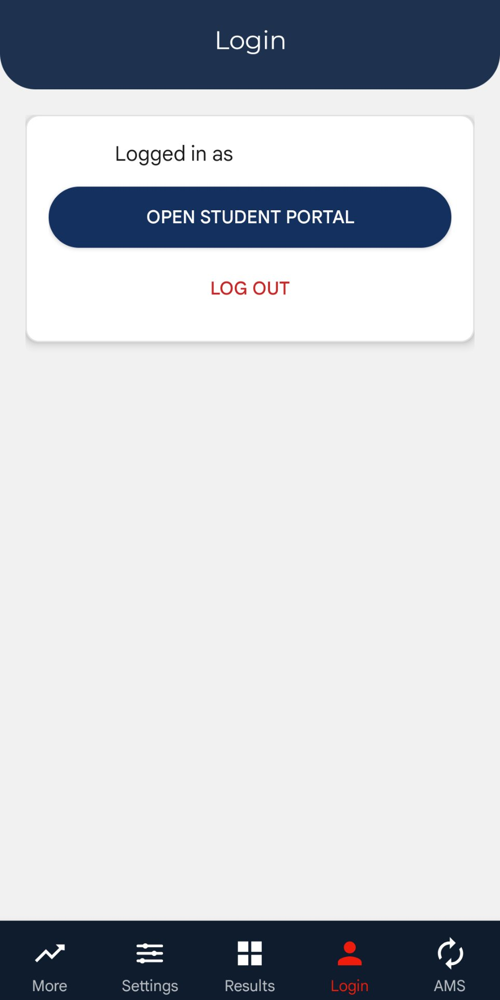
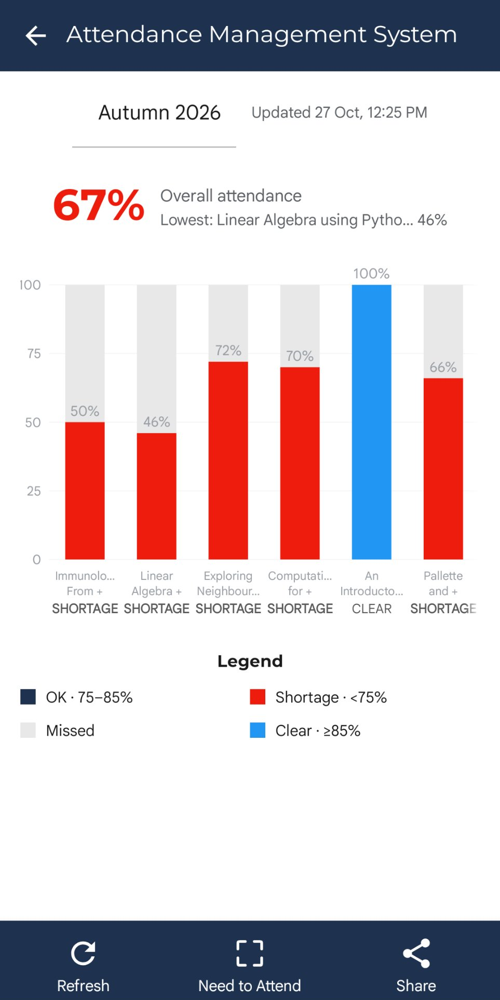
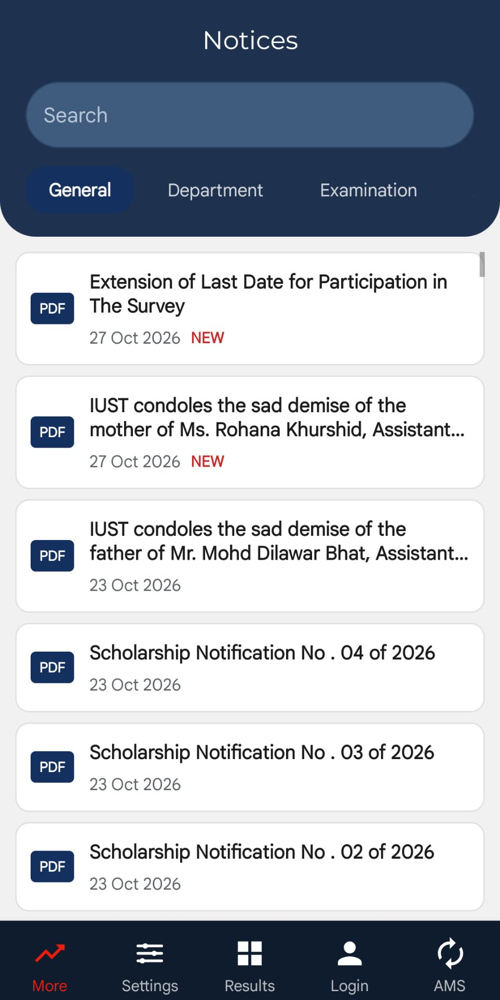
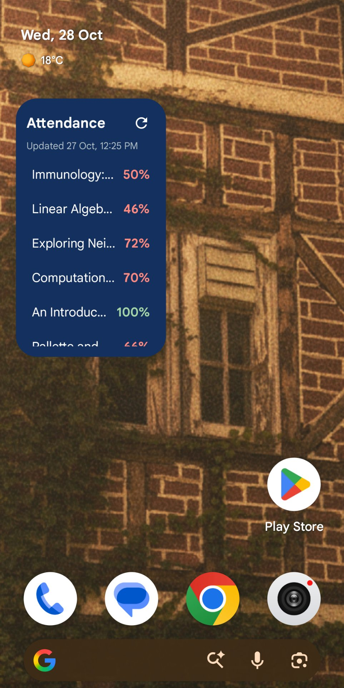

Official listing: apkpure.com/iust-student/com.mussey.iustapp
IUST Student is an unofficial, student-developed app for students of the Islamic University of Science and Technology (IUST), Awantipora. It wraps the university's student portal in a fast, phone-friendly app and adds the tools students actually check every day.
Features
Portal browsing with a saved login — stored encrypted on your device, unlocked with fingerprint or screen lock
Automatic attendance tracking for all subjects, with a home-screen widget and warnings below the 75% line
Attendance history graph
Results viewer and notices, fetched from the portal
In-app PDF viewer for notices and documents
Dark mode and pull-to-refresh
Screenshots




Privacy
Your portal credentials never leave your phone — they are stored in encrypted storage on the device and are only used to log in to the official IUST portal on your behalf. Privacy Policy